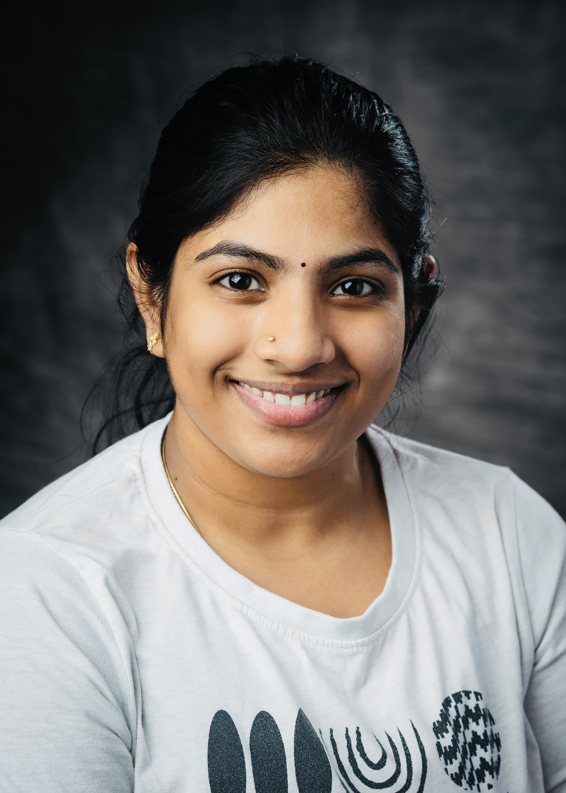

Intro
As a passionate and driven Computer Engineering graduate student at Wright State University, I am excited to share my journey and experiences that have shaped my academic and professional aspirations. My educational background began with a Bachelor’s in Electronics and Communication Engineering from Rajamahendri Institute of Engineering and Technology in India, where I developed a solid foundation in technology and engineering principles.
Currently, I am pursuing my Master’s degree with a GPA of 3.5/4, focusing on expanding my technical skills in programming languages such as Python, R, and SQL. I have engaged in various projects that not only challenged me but also allowed me to apply theoretical knowledge to real-world problems. For instance, I developed a GAN Defense Mechanism using advanced technologies like PyTorch and TensorFlow, and created a Face Recognition App utilizing Python and OpenCV. These projects reflect my commitment to continuous learning and innovation.
In addition to my technical pursuits, I value teamwork and community engagement. I have taken on leadership roles, such as hosting the Festival of Lights Event for the International Students Association at Wright State University, where I coordinated a team of 15 volunteers. My volunteer work with organizations like the Sneha Foundation has further enriched my understanding of social responsibility. As I continue my journey in computer engineering, I am eager to leverage my skills in data science through ongoing certifications, including a course from Scaler. I believe that my blend of technical expertise, leadership experience, and dedication to community service positions me well for future challenges in the tech industry.